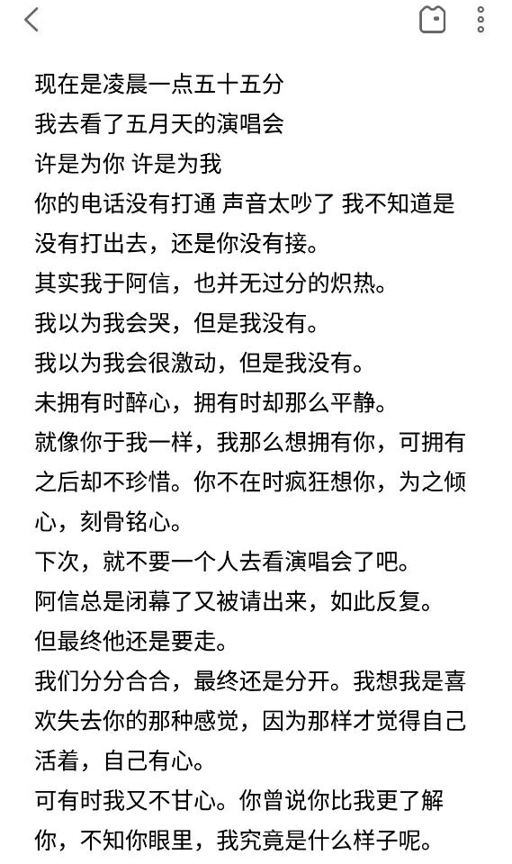
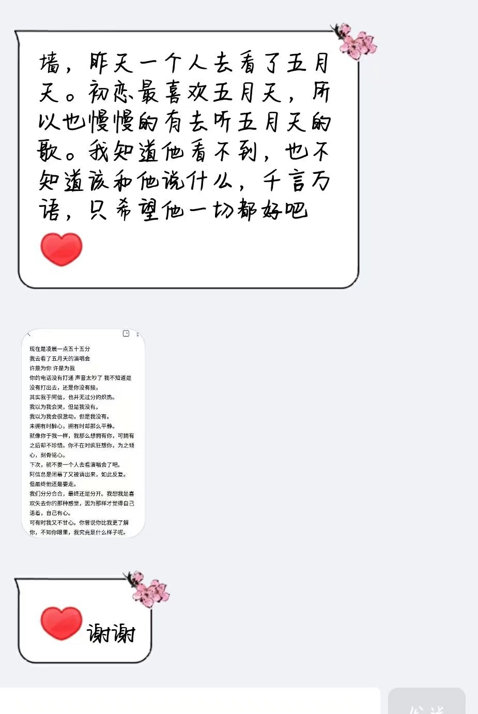
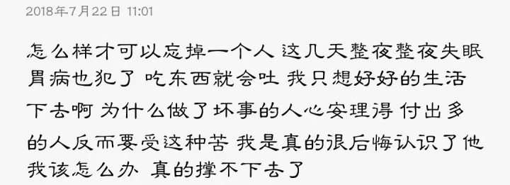
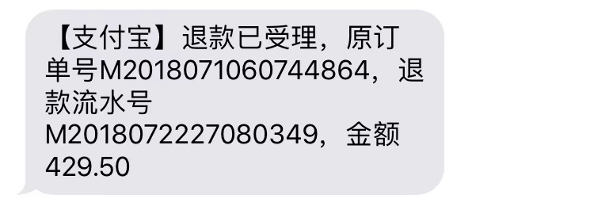
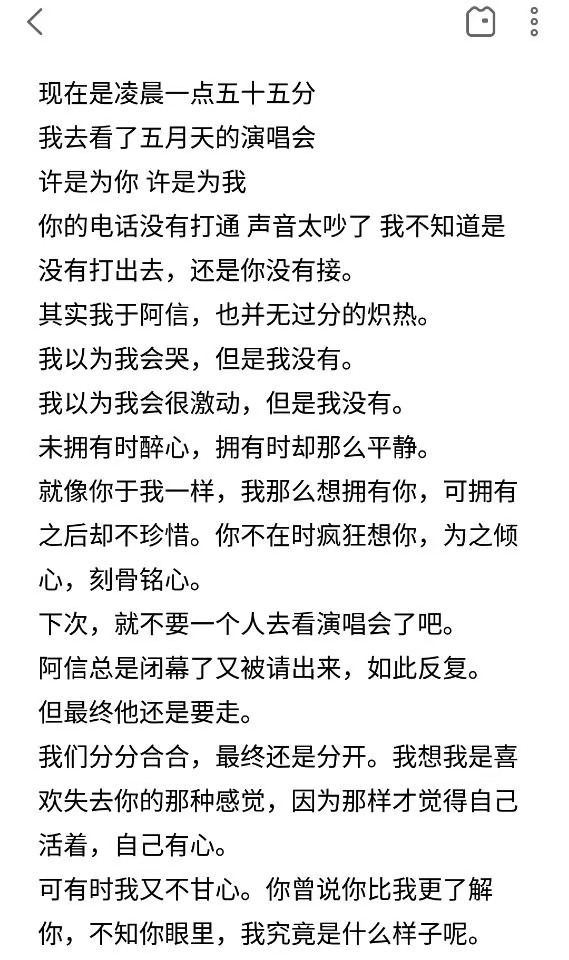
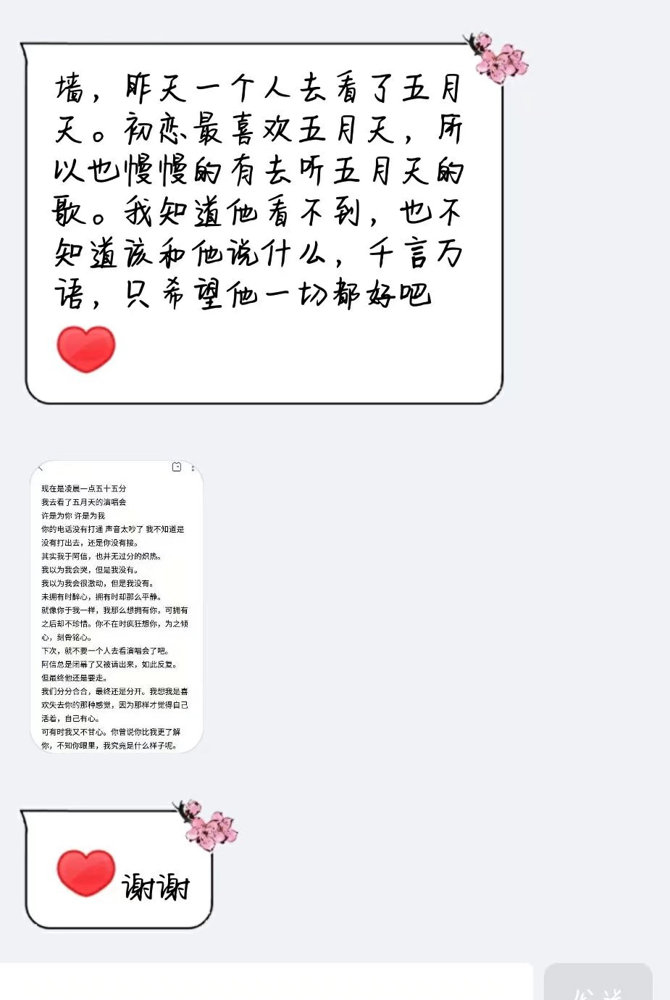
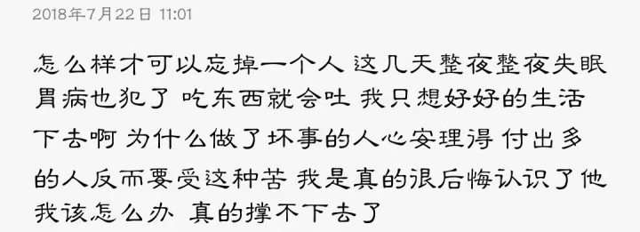

-
小乌龟
今天13:34 时间是让人触不及防的东西
会不会放手其实才是拥有
 王者荣耀圈 10 11 12
-
 小辣椒
小辣椒今天12:20 只期待 后来的你 能快乐
怎么才能忘掉一个人
小白菜圈 10 11 12
-
小脑斧
今天10:43 从此岁月无波澜，敬我余生不悲观
台风

阻碍了我回学校学习的步伐高数圈 10 11 12
今天13:34 时间是让人触不及防的东西
会不会放手其实才是拥有
 王者荣耀圈 10 11 12
今天12:20 只期待 后来的你 能快乐
怎么才能忘掉一个人
小白菜圈 10 11 12
今天10:43 从此岁月无波澜，敬我余生不悲观
台风
阻碍了我回学校学习的步伐
高数圈 10 11 12